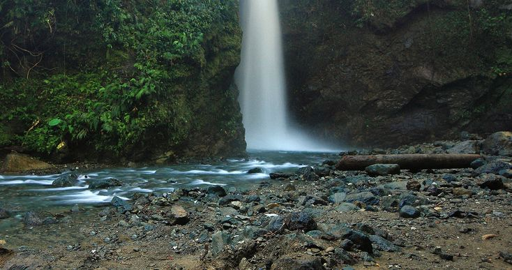

TOP ATTRACTION
1. Ditumabo Falls (Aurora)
Also known as the "Mother Falls," Ditumabo Falls is a majestic waterfall located in San Luis, Aurora, near Baler. It features a powerful cascade of cool, clear water surrounded by lush greenery and towering rock formations. The falls are reached after a scenic 45-minute trek through forests, small streams, and boulders. How to go to this tourist spot?
From Manila: Take a bus bound for Baler (Genesis or JoyBus) at Cubao or Pasay terminals (6-7 hours). From Baler town proper, hire a tricycle to take you to the jump-off point of Ditumabo Falls in Barangay Ditumabo, San Luis (about 30 minutes). You’ll need to trek for around 45 minutes to reach the falls. |
 |
2. Angat Watershed (Bulacan)
The Angat Watershed is a protected area that supplies water to Metro Manila and irrigates farmlands in Bulacan and Pampanga. It is also the site of Angat Dam, a major water reservoir. The watershed is home to diverse wildlife and dense forests, making it an important ecological zone. How to go to this tourist spot?
From Manila: Take a bus bound for Norzagaray, Bulacan from Cubao or Monumento (2 hours). Upon reaching Norzagaray, hire a tricycle or a jeepney to take you to Angat Dam and the watershed area, which is within the Ipo Watershed Reserve. Be sure to arrange permits and guides beforehand. |
3. Dingalan Bay (Aurora)
Dingalan Bay is located on the eastern coast of Luzon, in Aurora Province. Known for its rugged cliffs, scenic beaches, and breathtaking views of the Pacific Ocean, Dingalan is often referred to as the "Batanes of the East." Popular activities include hiking to the lighthouse, exploring white-sand beaches, and boat rides around the bay. How to go to this tourist spot?
From Manila: Take a bus bound for Cabanatuan (3-4 hours). From Cabanatuan City terminal, transfer to a van or bus going to Dingalan (2-3 hours). Once in Dingalan town proper, you can take a tricycle or a boat to various scenic spots around Dingalan Bay. |

|

|
4. Mount Daraitan (Rizal)
Mount Daraitan is a popular hiking destination in Tanay, Rizal, offering panoramic views of the Sierra Madre mountain range and the Tinipak River. The mountain is known for its limestone formations, caves, and clear river pools. The climb is moderately challenging, attracting nature lovers and adventurers looking for a quick escape from the city. How to go to this tourist spot?
From Manila: Ride a jeepney or UV Express from Cubao or Shaw Boulevard to Tanay Public Market (1-2 hours). From there, hire a tricycle to the Barangay Daraitan jump-off point (about 1 hour). You’ll cross a short river via bamboo raft before starting the trek up the mountain. |
5. Minalungao National Park (Nueva Ecija)
Minalungao National Park is a protected area in General Tinio, Nueva Ecija, known for its emerald-colored river flanked by towering limestone walls. The park offers activities like bamboo rafting, swimming, hiking, and spelunking in its cave systems, making it a popular destination for nature lovers and adventurers. How to go to this tourist spot?
From Manila: Take a bus to Gapan or Cabanatuan (3-4 hours). From Gapan, take a jeepney or tricycle going to General Tinio. From General Tinio town proper, hire a tricycle to Minalungao National Park (around 30-45 minutes). |

|

|
6. Daranak Falls (Rizal) |
7. Masungi Georeserve (Rizal) |

|

|
8. Casapsapan Beach (Aurora) |